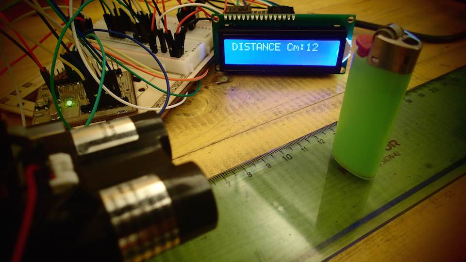
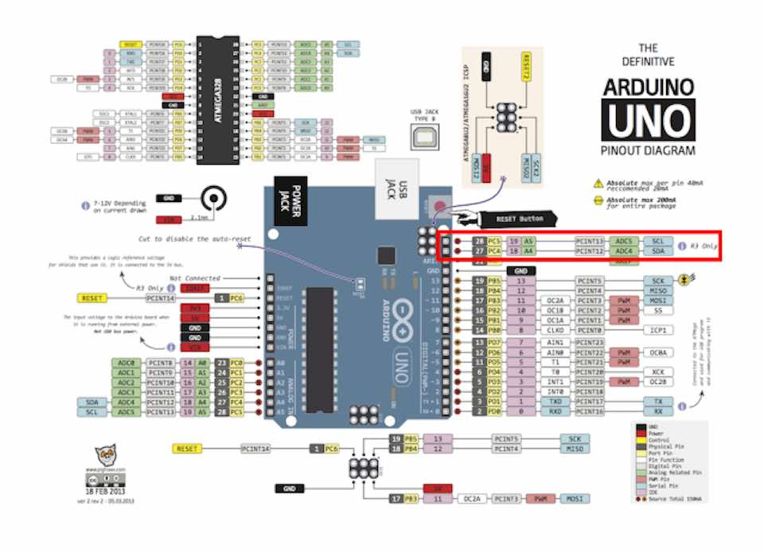
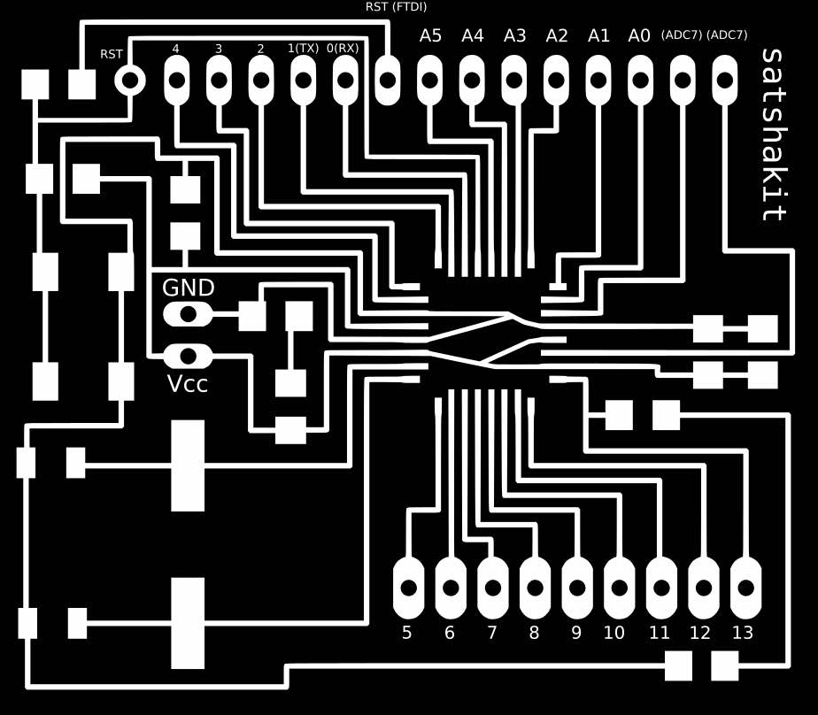

****************************************************************************************************************
ASSIGNMENT: ADD AN OUTPUT DEVICE TO A MICROCONTROLLER YOU'VE DESIGNED AND PROGRAM IT TO DO SOMETHING
PROJECT 1: EX N°11 OF ARDUINO PROJECT BOOK --> CRYSTAL BALL
PROJECT 2: USE A SATSHA KIT MICROCONTROLLER FOR READING A LASER DISTANCE MEASUREMENT IN A LCD : MERGE 2 DIFFERENT SKETCHES
INPUT: LIDAR LITE --> LASER DISTANCE MESUREMENT // POTENTIOMETER
OUTPUT: LCD LCM1602C
SOFT: IDE ARDUINO 1.6.3
LIBRARY:I2C
BOARD: SATSHAKIT BY --> DANIELE INGRASSIA // GIT HUB REPOSITORY OF THE PROJECT
DATASHEET: LCD LCM1602C // LIDAR LITE
TUTORIAL: WRITING UP A CHARACTER LCD TO AN ARDUINO
DOWNLOAD:
****************************************************************************************************************

1ST PART --> CREATE A CRYSTAL BALL TO TELL YOUR FUTURE
I had followed the simple production procedure in the Arduino Project Book, Exercise 11
I used this exercise to understand the use and the pin output of a LCD screen
COMPONENT USED FOR THE EXERCISE : 1X POTENTIOMETERS // 1X PUSH BUTTON // 1X RESISTOR 220 ohm // 1X 10 Kilohm RESISTOR // SWITC // TILT SENSOR // LCD SCREEN
2ND PART--> IMPORT I2C LIBRARY AND CONNECT THE LIDAR LASER DISTANCE MEASUREMENT TO A SATSHAKIT
After having downloaded and installed the Library I2C it is possible to connect the LIDAR LASER DISTANCE MESUREMENT to the SATSHAKIT
Differents sketchess are available in the Git Hub Repository of the Lidar Retailer.
The one I used was the LIDAR LITE_BASIC

For connecting the LASER to the SATSHAKIT we need to connect the SDA and SCL pins to the board
Lake as possible to look in the follow images the SDA corresponding to PIN A4 and the SCL corresponding to PIN A5 in Arduino and in consequence in the SATSHAKIT


After I did this, I download the SKETCH from the Pulsed Light 3D Git Hub repository, that uses the Arduino I2C Master Library
/*
http://pulsedlight3d.com
This sketch demonstrates getting distance with the LIDAR-Lite Sensor
It utilizes the 'Arduino I2C Master Library' from DSS Circuits:
http://www.dsscircuits.com/index.php/articles/66-arduino-i2c-master-library
You can find more information about installing libraries here:
http://arduino.cc/en/Guide/Libraries
*/
#include
#define LIDARLite_ADDRESS 0x62 // Default I2C Address of LIDAR-Lite.
#define RegisterMeasure 0x00 // Register to write to initiate ranging.
#define MeasureValue 0x04 // Value to initiate ranging.
#define RegisterHighLowB 0x8f // Register to get both High and Low bytes in 1 call.
void setup(){
Serial.begin(9600); //Opens serial connection at 9600bps.
I2c.begin(); // Opens & joins the irc bus as master
delay(100); // Waits to make sure everything is powered up before sending or receiving data
I2c.timeOut(50); // Sets a timeout to ensure no locking up of sketch if I2C communication fails
}
void loop(){
// Write 0x04 to register 0x00
uint8_t nackack = 100; // Setup variable to hold ACK/NACK resopnses
while (nackack != 0){ // While NACK keep going (i.e. continue polling until sucess message (ACK) is received )
nackack = I2c.write(LIDARLite_ADDRESS,RegisterMeasure, MeasureValue); // Write 0x04 to 0x00
delay(1); // Wait 1 ms to prevent overpolling
}
byte distanceArray[2]; // array to store distance bytes from read function
// Read 2byte distance from register 0x8f
nackack = 100; // Setup variable to hold ACK/NACK resopnses
while (nackack != 0){ // While NACK keep going (i.e. continue polling until sucess message (ACK) is received )
nackack = I2c.read(LIDARLite_ADDRESS,RegisterHighLowB, 2, distanceArray); // Read 2 Bytes from LIDAR-Lite Address and store in array
delay(1); // Wait 1 ms to prevent overpolling
}
int distance = (distanceArray[0] << 8) + distanceArray[1]; // Shift high byte [0] 8 to the left and add low byte [1] to create 16-bit int
// Print Distance
Serial.println(distance);
delay(500);
}
3RD PART --> MODIFY AND USE THE ARDUINO SKETCH "LIQUID CRYSTAL HELLO WORLD" WITH A SATSHAKIT
I opened the sketch : Example ---> LiquidCrystal --> Helloworld from the example section of IDE ARDUINO

This sketch originally used the pin A4 and A5 to connect the LCD. The same one that I need to connect the Lidar Lite Laser.
So I changed the original sketch address of the LCD
LiquidCrystal lcd(12, 11, 5, 4, 3, 2);
and changed it to:
LiquidCrystal lcd(7, 8, 9, 10, 11, 12);
The new and modify "LIQUIDCRYSTAL HELLO WORLD" sketch is :
*/ // include the library code: #include// initialize the library with the numbers of the interface pins LiquidCrystal lcd(7, 8, 9, 10, 11, 12); void setup() { // set up the LCD's number of columns and rows: lcd.begin(16, 2); // Print a message to the LCD. lcd.print("hello, world!"); } void loop() { // set the cursor to column 0, line 1 // (note: line 1 is the second row, since counting begins with 0): lcd.setCursor(0, 1); // print the number of seconds since reset: lcd.print(millis()/1000); }
4TH PART --> MERGE 2 SKETCHES : "LIQUIDCRYSTAL HELLO WORLD" + "LIDAR LITE BASIC"
Now it is the moment to merge 2 sketches:
I respected the fields "void setup ()" and "void loop ()" to create only one sketch.
I modified :
Removed
lcd.print ("hello, world!")
Removed
Serial.begin(9600);
Add "lcd.clear" line to refresh the LCD data
lcd.clear();
Add "lcd.print" to print the 1st text
lcd.print("DISTANCE Cm:");
Add "lcd.print" to print the 2nd text Lidar Information
lcd.print(distance);
Add "delay" line to reduce the data dispatch time and allow the LCD to visualize the data properly
delay(500);
The result is the following sketch : -)
/* LiquidCrystal + LIDAR Lite Sensor By Pierluigi De Palo // Fab Academy 2015 Demonstrates the use a 16x2 LCD display. The LiquidCrystal library works with all LCD displays that are compatible with the Hitachi HD44780 driver. There are many of them out there, and you can usually tell them by the 16-pin interface. The circuit: For the LCD * LCD RS pin to digital pin 7 * LCD Enable pin to digital pin 8 * LCD D4 pin to digital pin 9 * LCD D5 pin to digital pin 10 * LCD D6 pin to digital pin 11 * LCD D7 pin to digital pin 12 * LCD R/W pin to ground * LCD VSS pin to ground * LCD VCC pin to 5V * ends to +5V and ground * wiper to LCD VO pin (pin 3) Library originally added 18 Apr 2008 by David A. Mellis Modified 5 Jul 2009 by Limor Fried (http://www.ladyada.net) Example added 9 Jul 2009 by Tom Igoe modified 22 Nov 2010 by Tom Igoe This example code is in the public domain. http://www.arduino.cc/en/Tutorial/LiquidCrystal For the Lidar Lite Distance Sensor: * Lidar Lite GND * Lidar Lite SDA * Lidar Lite SCL * Lidar Lite MODE no pin * Lidar Lite PWR EN no pin * Lidar 5V */ // include the library code: #include#include #define LIDARLite_ADDRESS 0x62 // Default I2C Address of LIDAR-Lite. #define RegisterMeasure 0x00 // Register to write to initiate ranging. #define MeasureValue 0x04 // Value to initiate ranging. #define RegisterHighLowB 0x8f // Register to get both High and Low bytes in 1 call. // initialize the library with the numbers of the interface pins LiquidCrystal lcd(7, 8, 9, 10, 11, 12); void setup() { lcd.begin(16, 2); // set up the LCD's number of columns and rows: I2c.begin(); // Opens & joins the irc bus as master delay(500); // Waits to make sure everything is powered up before sending or receiving data I2c.timeOut(50); // Sets a timeout to ensure no locking up of sketch if I2C communication fails } void loop() { // Write 0x04 to register 0x00 uint8_t nackack = 100; // Setup variable to hold ACK/NACK resopnses while (nackack != 0){ // While NACK keep going (i.e. continue polling until sucess message (ACK) is received ) nackack = I2c.write(LIDARLite_ADDRESS,RegisterMeasure, MeasureValue); // Write 0x04 to 0x00 delay(1); // Wait 1 ms to prevent overpolling } byte distanceArray[2]; // array to store distance bytes from read function // Read 2byte distance from register 0x8f nackack = 100; // Setup variable to hold ACK/NACK resopnses while (nackack != 0){ // While NACK keep going (i.e. continue polling until sucess message (ACK) is received ) nackack = I2c.read(LIDARLite_ADDRESS,RegisterHighLowB, 2, distanceArray); // Read 2 Bytes from LIDAR-Lite Address and store in array delay(1); // Wait 1 ms to prevent overpolling } int distance = (distanceArray[0] << 8) + distanceArray[1]; // Shift high byte [0] 8 to the left and add low byte [1] to create 16-bit int lcd.setCursor(6, 1); // set the cursor to column and line // (note: line 1 is the second row, since counting begins with 0): lcd.clear(); lcd.print("DISTANCE Cm:"); lcd.print(distance); // Print Distance delay(500); }